说明：累计因子线上回溯（已下线-升级中）
一、解决问题
解决新增的累计因子必须过了相应的累计时间才能上线生效，无法根据历史日志数据进行回溯并将回溯结果应用在线上，导致即使特征构建完成但因时效滞后，容易导致风险漏过。
例如：20190403配置了同poi近7天支付订单数的累计，由于没有回溯功能，该因子只能等到20190410才有近7天的累计值
二、操作说明
-
用户操作流程概述
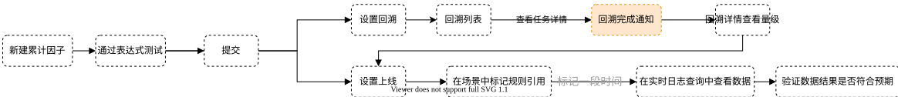
-
操作流程详情
Step1:创建累计因子
|
说明 |
页面 |
|---|---|
|
【入口】 因子--> 选择工具（累计因子） |
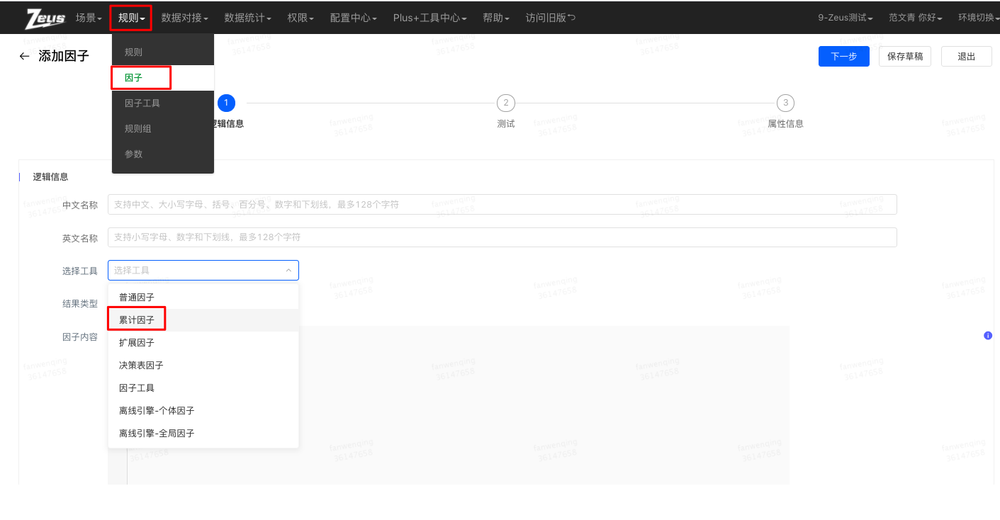 |
|
【创建累计因子】 同当前创建累计因子相同，创建完成回到因子列表页可以看到刚刚创建的累计因子状态为“未测试” |
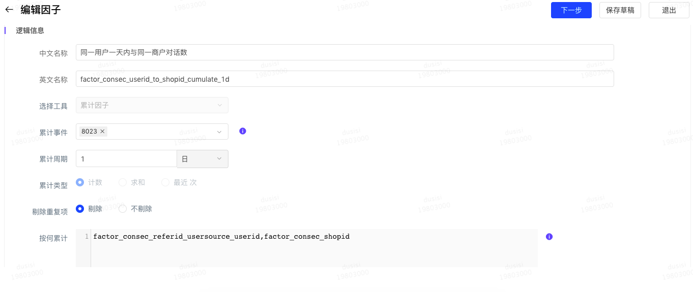 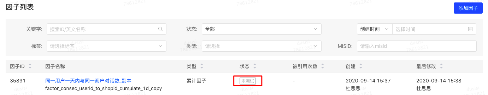 |
Step2:设置回溯
|
说明 |
页面 |
|---|---|
|
【入口】 点击进入状态为“未测试”的累计因子详情中-->添加有通过的测试用例后-->点击 开始回溯 ⚠️ 1.累计因子是未测试的状态（实际上已经测试成功了，此状态方可进行回溯） 2.累计因子在回溯任务完成前是无法在规则中使用的 【大象提示】 回溯任务完成后，会收到大象的回溯任务完成信息，详情如下： |
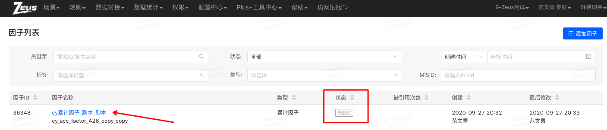 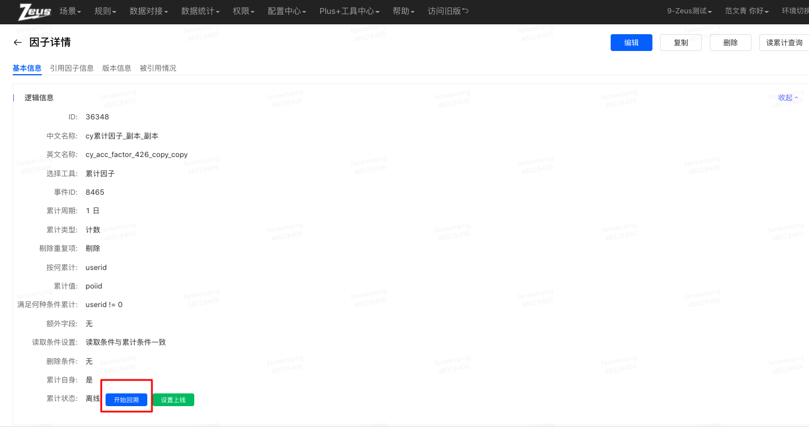 |
|
【查看回溯任务详情】 点击进入 规则回溯 页面，可以在回溯任务列表中查看到刚刚创建的累计因子回溯任务 点击进入回溯任务详情中后可以查看回溯任务详情以及回溯结果（发送累计请求量、满足写入条件命中量） |
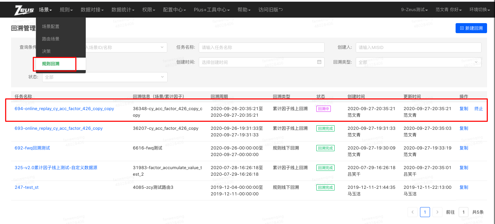 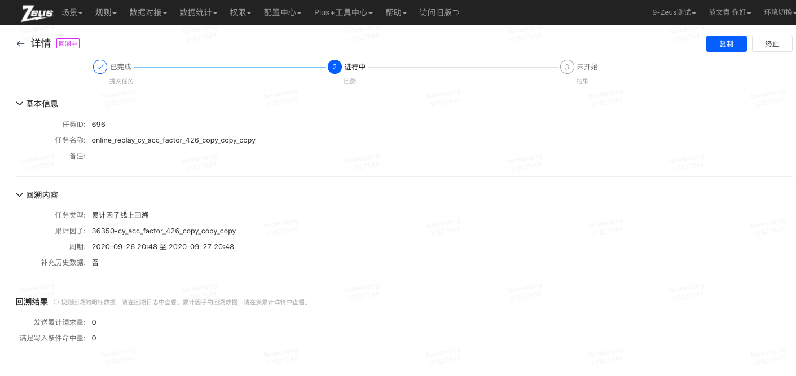 |
|
【终止回溯】 累计因子在回溯过程中，若时间过长或用户需要终止回溯： 1.可以在累计因子详情页点击“停止回溯”，填写 终止回溯原因 提交后即可终止回溯任务 2.或者在规则回溯页面找到回溯任务，点击任务列表中的 终止 按钮，点击弹框中的确认终止按钮后也可终止回溯任务 ⚠️回溯任务未完成前进行终止，任务终止后已经回溯的数据将不会保留 终止后，再次启动回溯不会引入脏数据 |
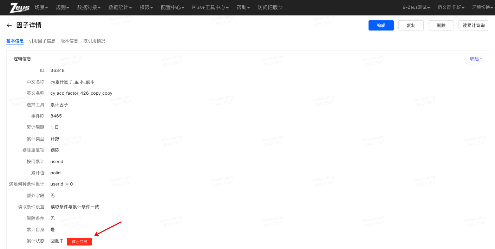 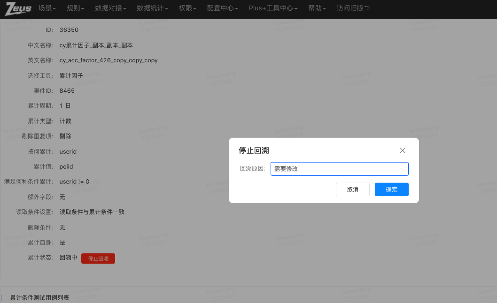 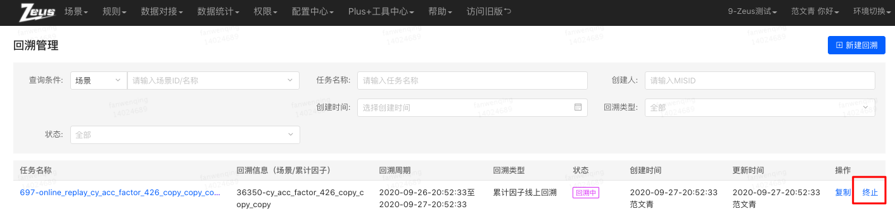 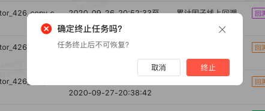 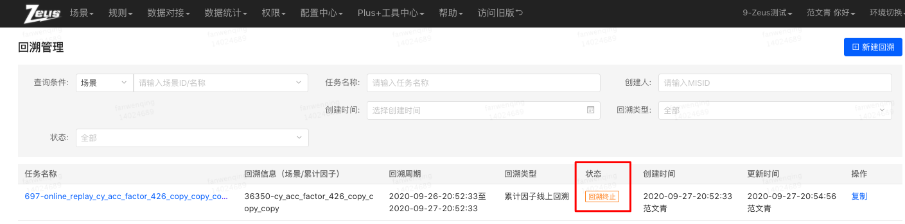 |
|
【设置上线】 回溯完成后，查看回溯结果没有问题后，点进去刚刚创建的累计因子详情页，点击 设置上线 回到累计因子列表页，刚刚创建的累计因子状态变为 就绪 状态，此时才可在规则中引用 |
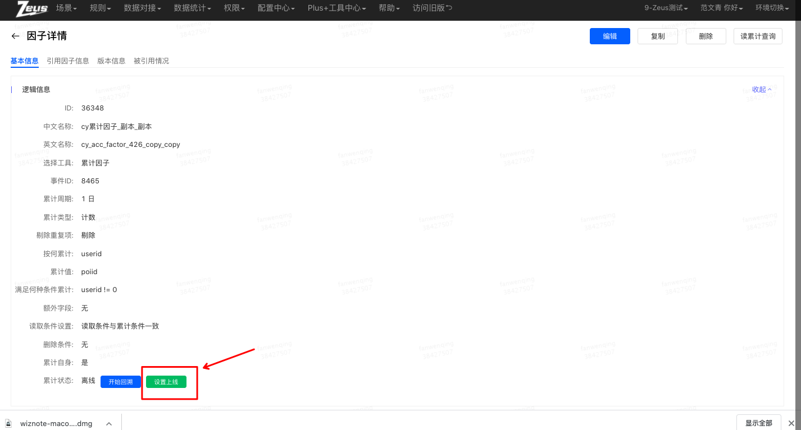 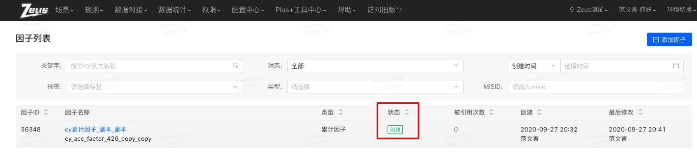 |
Step3:回溯完成后创建规则标记在场景中
|
说明 |
页面 |
|---|---|
|
【设置上线】
【创建规则】 正常创建规则即可 【规则在场景中标记】 正常创建场景配置即可（规则添加到场景中） |
Step4:回溯结果验证
|
说明 |
页面 |
|---|---|
|
【实时日志查询】 同正常因子、规则命中情况验证一致 |
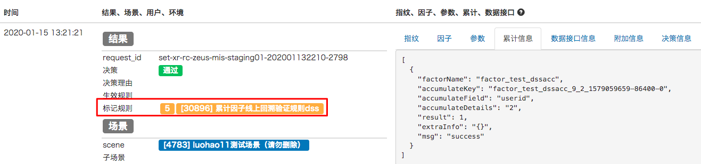 |
- 累计回溯可支持的最长回溯时间周期：近15天，超过15天的累计周期无法进行历史回溯（同线上实时日志查询相同）
- 累计回溯的信息，可通过读累计和写累计详情查看，具体👉说明：累计因子排查工具
三、FAQ
Q1 : 为什么在因子New页面中创建完累计因子，在因子页面中无法进行回溯？
--A：在因子页面中点击设置离线后，可见回溯按钮（因前端资源瓶颈，该问题尚未解决，已排期）
Q2：在大象中收到回溯完成通知，为什么在因子页面中无明确的信息展示？
--A：回溯完成后因子状态恢复非回溯状态，目前缺失回溯管理页面暂无法有明确的历史状态信息展示
Q3：累计因子可回溯的时间周期是否可延长？
--A：支持，操作手册见说明：回溯功能：
Q4：累计因子添加了测试用例，为什么还显示未测试？
--A：当前未测试和未就绪两个状态共用“未测试”信息，短期无法修复，请忽略该信息。
Q4：如何修改线上生效累计因子？
--A：先进入累计因子详情页，点击 设置离线 按钮，将累计因子设置离线后方可修改，如图所示-->
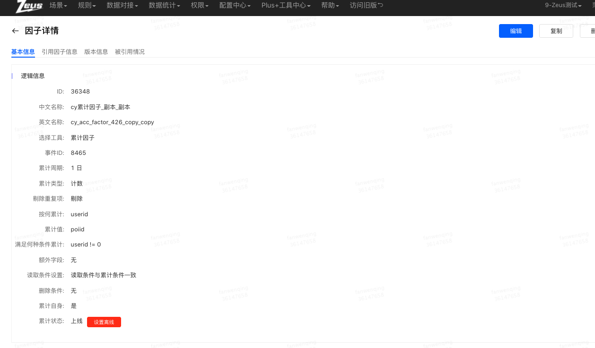
四、性能问题相关
- 由于可能影响累计服务的性能，所以只支持同时跑3个累计因子线上回溯任务。如已有3个累计因子线上回溯任务，再创建新任务时，会提示【无法创建成功】
- 只支持累计周期在15日内的累计因子线上回溯，超出的天数由于无法从hbase中获取到源数据，所以无法进行回溯
- 如发现累计因子线上回溯失败的情况，请联系 @Zeus查看原因